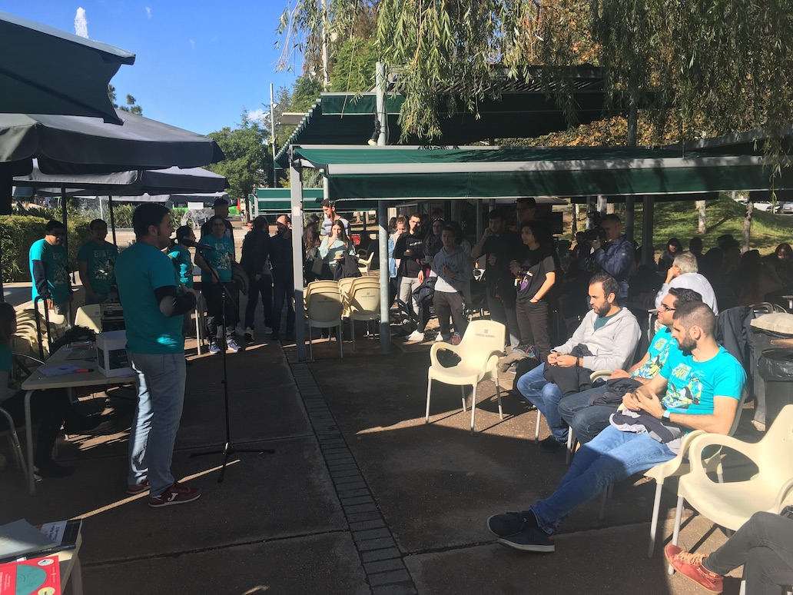
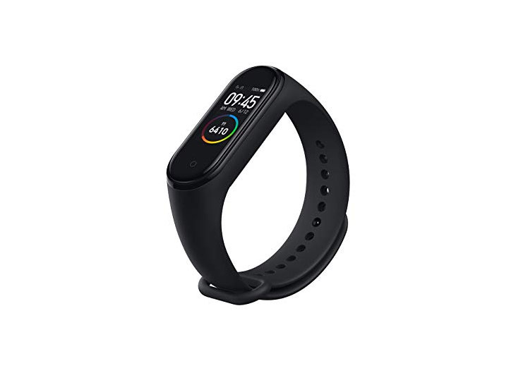

El GIS Day 2019 ya ha pasado, pero puedes contactarnos si necesitas cualquier cosa.
Muchas gracias a todos los participantes, y enhorabuena a los premiados!!
GIS Day
Muchas gracias por participar!

El próximo 13 de Noviembre se celebra el Día de los Sistemas de Información Geográfica (SIG) o
GIS Day (en inglés) y desde GEOTEC queremos celebrarlo con toda la Comunidad Universitaria de la
UJI.
Los sistemas GIS nos ayudan a recopilar, analizar y visualizar datos geográficos para ayudarnos
a tomar mejores decisiones.
El objetivo del GIS Day es el de difundir las aplicaciones
GIS que
están marcando la diferencia en nuestra sociedad. Es una oportunidad para inspiraros y ayudaros
a descubrir cómo usar GIS, no importa desde qué disciplina vengas.
¿En qué consiste?
Hemos preparado unas Misiones muy sencillas que te ayudarán a entender cómo usamos las tecnologías GIS o geoespaciales en nuestro día a día. Sólo tienes que ir cumpliendo misiones y participarás en el sorteo de un Smartphone, una Pulsera Inteligente, unos auriculares bluetooth y mucho más.
- Smartphone
- Pulsera Inteligente
- Auriculares bluetooth
- Auriculares bluetooth
Smartphone
LG K50 AURORA BLACK - 6.3"/16CM HD+ - OC 2GHZ - 3GB - 32GB - CÁMARA (13+2)/13MP - DUAL SIM - 4G - ANDROID 9 - BT - BAT3500MA

Pulsera Inteligente
XIAOMI Mi Smart Band 4

Auriculares bluetooth
MYWAY AIRPODS NEGROS - BT4.2+EDR - BATERÍA AURICULAR 45MAH - ESTUCHE DE CARGA 400MAH - FUNC. MANOS LIBRES
¿Cómo participar?
Las misiones son diferentes retos a conseguir. Una vez cumplida cada misión debes compartir tu
éxito a través de Twitter, Instagram o Facebook con el hasthtag #GISDay19UJI y #Mision1,
#Mision2, etc
Tienes que realizar las misiones entre el 4 y el 12 de Noviembre sin importar el orden en el que
las realices. Teniendo como Misión Final y requisito para participar en el sorteo cumplir la
Misión número 7
Misiones
-
Misión 1
Mira el vídeo , sólo te llevará un minuto, y responde a esta pregunta “Dinos algún tipo de dato que incorpore información relativa a la posición”
-
Misión 2
Descárgate el juego Escape the Place (Android; iOS) y dirígete al edificio Espaitec II donde se desarrolla la acción. Comparte una captura de la pantalla cuando completes el juego
-
Misión 3
Descárgate la app de la Biblioteca de la UJI (Android; iOS; Web), busca tu libro favorito en la biblioteca de la UJI y comparte una captura de pantalla de la ruta hasta el libro.
-
Misión 4
Localiza un caballo de los que hay repartidos por el Campus, y comparte su localización.
-
Misión 5
Busca el código del aula de tu próxima clase en smart.uji.es, haz una captura de pantalla y compártela.
-
Misión 6
Demuestra lo que sabes sobre GIS con un tweet en el que indiques para qué sirve GIS en tu campo, sigue esta entradilla “En mi campo GIS se puede utilizar para …”
Misión 7 y final
Conócenos el 13 de Noviembre a las 12.00 en el Jardí dels Sentits,
y participa en el
sorteo!
Requisitos para participar
-
Cualquier persona puede participar.
-
Asegúrate de que tus posts son públicos o nómbranos para que podamos verlos.
-
Por cada misión que completes tendrás un boleto para participar en el sorteo de un Smartphone, una Pulsera Inteligente, un altavoz bluetooth y mucho más. Cuantas más misiones completes, más posibilidades de ganar.
-
Para poder participar debes de completar al menos una de las Misiones + la Misión Final (Misión 7)
-
Recuerda compartir las misiones completadas a través de Twitter o Instagram o Facebook con el hashtag #GISDay19UJI e indicando el número de Misión, por ejemplo #Mision3
-
Puedes participar a través de cualquiera de las tres redes sociales, pero sólo una vez por Misión y desde una única cuenta en el mismo medio. De modo que una misma persona tendrá como máximo 7 boletos participantes en el sorteo, uno por Misión cumplida correctamente.
-
Sólo aceptaremos aquellas participaciones que sigan pautas no ofensivas, discriminatorias, ni de mal gusto.
-
El día de la Misión Final acércate a la mesa del sorteo y validaremos tu participación.